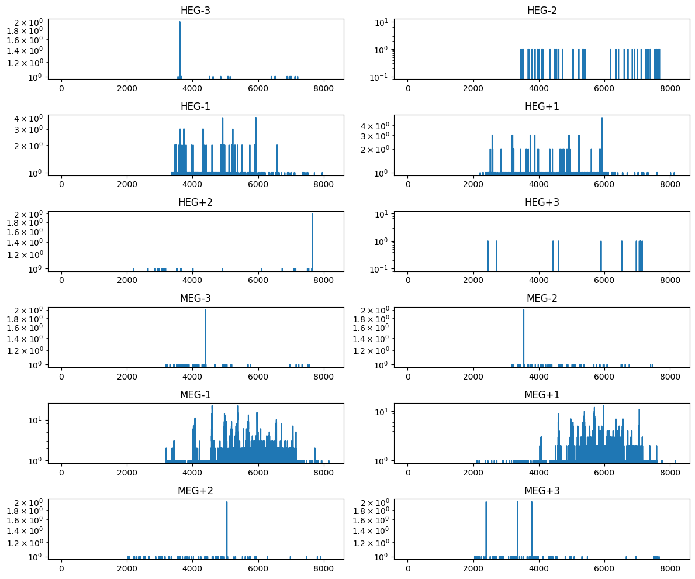

Spectral Access#
This notebook is one of a set produced by NAVO to demonstrate data access with python tools.
In this notebook, we show how to search for and retrieve spectra from VO services using the Registry and the Simple Spectral Access (SSA) protocol.
import numpy as np
import matplotlib
import matplotlib.pyplot as plt
%matplotlib inline
import requests, io
from astropy.table import Table
import astropy.io.fits as fits
from astropy.coordinates import SkyCoord
# For downloading files
from astropy.utils.data import download_file
import pyvo as vo
# There are a number of relatively unimportant warnings that show up, so for now, suppress them:
import warnings
warnings.filterwarnings("ignore", module="astropy.io.votable.*")
warnings.filterwarnings("ignore", module="pyvo.utils.xml.*")
Finding available Spectral Access Services#
First, we find out what spectral access services (‘ssa’) are available in the Registry offering x-ray data.
services = vo.regsearch(servicetype='ssa',waveband='x-ray')
services.to_table()['ivoid','short_name']
Table length=7
| ivoid | short_name |
|---|---|
| object | object |
| ivo://nasa.heasarc/chanmaster | Chandra |
| ivo://nasa.heasarc/hitomaster | HITOMASTER |
| ivo://nasa.heasarc/intbsc | INTEGRAL/BSC |
| ivo://nasa.heasarc/xrismmastr | XRISMMASTR |
| ivo://nasa.heasarc/xtemaster | RXTE |
| ivo://ned.ipac/sed_data_near_position | NED_SED |
| ivo://wfau.roe.ac.uk/heavens_at_isdc/light-curves | HEAVENS @ ISDC |
We can look at only the Chandra entry:
chandra_service = [s for s in services if 'Chandra' in s.short_name][0]
chandra_service.access_url
'https://heasarc.gsfc.nasa.gov/xamin/vo/ssa?table=chanmaster&'
Chandra Spectrum of Delta Ori#
Getting the list of spectra.
delori = SkyCoord.from_name("Delta Ori")
spec_tables = chandra_service.search(pos=delori,diameter=0.1)
spec_tables.to_table().show_in_notebook()
WARNING: AstropyDeprecationWarning: show_in_notebook() is deprecated as of 6.1 and to create
interactive tables it is recommended to use dedicated tools like:
- https://github.com/bloomberg/ipydatagrid
- https://docs.bokeh.org/en/latest/docs/user_guide/interaction/widgets.html#datatable
- https://dash.plotly.com/datatable [warnings]
Table length=6
| idx | obsid | status | name | ra | dec | time | detector | grating | exposure | type | pi | public_date | datalink | SSA_start_time | SSA_tmid | SSA_stop_time | SSA_duration | SSA_coord_obs | SSA_ra | SSA_dec | SSA_fov | SSA_title | SSA_reference | SSA_datalength | SSA_datamodel | SSA_instrument | SSA_publisher | SSA_format | SSA_wavelength_min | SSA_wavelength_max | SSA_bandwidth | SSA_bandpass | cloud_access |
|---|---|---|---|---|---|---|---|---|---|---|---|---|---|---|---|---|---|---|---|---|---|---|---|---|---|---|---|---|---|---|---|---|---|
| deg | deg | d | s | d | d | d | d | s | deg | deg | deg | deg | m | m | m | m | |||||||||||||||||
| 0 | 639 | archived | DELTA ORI | 83.00125 | -0.29917 | 51556.1364 | ACIS-S | HETG | 49680 | GO | Cassinelli | 52037 | 11743:chandra.obs.misc | 51556.136400463 | -- | -- | 49680.0 | -- | 83.00125 | -0.29917 | 0.81 | acisf00639N005_pha2.fits | https://heasarc.gsfc.nasa.gov/FTP/chandra/data/byobsid/9/639/primary/acisf00639N005_pha2.fits.gz | 12 | Spectrum-1.0 | ACIS-S | HEASARC | application/fits | 1.2398e-10 | 6.1992e-09 | 6.07522e-09 | 3.16159e-09 | {"aws":{"bucket_name":"nasa-heasarc","region":"us-east-1","policy":"open","key":"chandra/data/byobsid/9/639/primary/acisf00639N005_pha2.fits.gz"}} |
| 1 | 7416 | archived | delta Ori (HD 36486) | 83.00167 | -0.29908 | 54413.427 | HRC-S | LETG | 97080 | GO | Raassen | 54783 | 11744:chandra.obs.misc | 54413.4270486111 | -- | -- | 97080.0 | -- | 83.00167 | -0.29908 | 0.81 | hrcf07416N004_pha2.fits | https://heasarc.gsfc.nasa.gov/FTP/chandra/data/byobsid/6/7416/primary/hrcf07416N004_pha2.fits.gz | 2 | Spectrum-1.0 | HRC-S | HEASARC | application/fits | 1.2398e-10 | 6.1992e-09 | 6.07522e-09 | 3.16159e-09 | {"aws":{"bucket_name":"nasa-heasarc","region":"us-east-1","policy":"open","key":"chandra/data/byobsid/6/7416/primary/hrcf07416N004_pha2.fits.gz"}} |
| 2 | 14567 | archived | Delta Ori | 83.00167 | -0.29908 | 56280.7037 | ACIS-S | HETG | 116500 | GO | Corcoran | 56647 | 11745:chandra.obs.misc | 56280.7036921296 | -- | -- | 116500.0 | -- | 83.00167 | -0.29908 | 0.81 | acisf14567N003_pha2.fits | https://heasarc.gsfc.nasa.gov/FTP/chandra/data/byobsid/7/14567/primary/acisf14567N003_pha2.fits.gz | 12 | Spectrum-1.0 | ACIS-S | HEASARC | application/fits | 1.2398e-10 | 6.1992e-09 | 6.07522e-09 | 3.16159e-09 | {"aws":{"bucket_name":"nasa-heasarc","region":"us-east-1","policy":"open","key":"chandra/data/byobsid/7/14567/primary/acisf14567N003_pha2.fits.gz"}} |
| 3 | 14568 | archived | Delta Ori | 83.00167 | -0.29908 | 56288.1612 | ACIS-S | HETG | 123600 | GO | Corcoran | 56655 | 11746:chandra.obs.misc | 56288.1612268519 | -- | -- | 123600.0 | -- | 83.00167 | -0.29908 | 0.81 | acisf14568N003_pha2.fits | https://heasarc.gsfc.nasa.gov/FTP/chandra/data/byobsid/8/14568/primary/acisf14568N003_pha2.fits.gz | 12 | Spectrum-1.0 | ACIS-S | HEASARC | application/fits | 1.2398e-10 | 6.1992e-09 | 6.07522e-09 | 3.16159e-09 | {"aws":{"bucket_name":"nasa-heasarc","region":"us-east-1","policy":"open","key":"chandra/data/byobsid/8/14568/primary/acisf14568N003_pha2.fits.gz"}} |
| 4 | 14569 | archived | Delta Ori | 83.00167 | -0.29908 | 56283.254 | ACIS-S | HETG | 120850 | GO | Corcoran | 56650 | 11747:chandra.obs.misc | 56283.2539814815 | -- | -- | 120850.0 | -- | 83.00167 | -0.29908 | 0.81 | acisf14569N003_pha2.fits | https://heasarc.gsfc.nasa.gov/FTP/chandra/data/byobsid/9/14569/primary/acisf14569N003_pha2.fits.gz | 12 | Spectrum-1.0 | ACIS-S | HEASARC | application/fits | 1.2398e-10 | 6.1992e-09 | 6.07522e-09 | 3.16159e-09 | {"aws":{"bucket_name":"nasa-heasarc","region":"us-east-1","policy":"open","key":"chandra/data/byobsid/9/14569/primary/acisf14569N003_pha2.fits.gz"}} |
| 5 | 14570 | archived | Delta Ori | 83.00167 | -0.29908 | 56285.5508 | ACIS-S | HETG | 124100 | GO | Corcoran | 56652 | 11748:chandra.obs.misc | 56285.5507986111 | -- | -- | 124100.0 | -- | 83.00167 | -0.29908 | 0.81 | acisf14570N003_pha2.fits | https://heasarc.gsfc.nasa.gov/FTP/chandra/data/byobsid/0/14570/primary/acisf14570N003_pha2.fits.gz | 12 | Spectrum-1.0 | ACIS-S | HEASARC | application/fits | 1.2398e-10 | 6.1992e-09 | 6.07522e-09 | 3.16159e-09 | {"aws":{"bucket_name":"nasa-heasarc","region":"us-east-1","policy":"open","key":"chandra/data/byobsid/0/14570/primary/acisf14570N003_pha2.fits.gz"}} |
Accessing one of the spectra.
## If you only run this once, you can do it in memory in one line:
## This fetches the FITS as an astropy.io.fits object in memory
# hdu_list = spec_tables[0].getdataobj()
## But if you might run this notebook repeatedly with limited bandwidth,
## download it once and cache it.
file_name = download_file(spec_tables[0].getdataurl(),cache=True)
hdu_list = fits.open(file_name)
Simple example of plotting a spectrum#
spec_table = Table(hdu_list[1].data)
spec_table
Table length=12
| SPEC_NUM | TG_M | TG_PART | TG_SRCID | X | Y | CHANNEL | COUNTS | STAT_ERR | BACKGROUND_UP | BACKGROUND_DOWN | BIN_LO | BIN_HI |
|---|---|---|---|---|---|---|---|---|---|---|---|---|
| int16 | int16 | int16 | int16 | float32 | float32 | int16[8192] | int16[8192] | float32[8192] | int16[8192] | int16[8192] | float64[8192] | float64[8192] |
| 1 | -3 | 1 | 1 | 4094.9138 | 4132.076 | 1 .. 8192 | 0 .. 0 | 1.8660254 .. 1.8660254 | 0 .. 0 | 0 .. 0 | 7.159166666667378 .. 0.3333333333333333 | 7.160000000000712 .. 0.33416666666666667 |
| 2 | -2 | 1 | 1 | 4094.9138 | 4132.076 | 1 .. 8192 | 0 .. 0 | 1.8660254 .. 1.8660254 | 0 .. 0 | 0 .. 0 | 10.738750000000886 .. 0.5 | 10.740000000000887 .. 0.50125 |
| 3 | -1 | 1 | 1 | 4094.9138 | 4132.076 | 1 .. 8192 | 0 .. 0 | 1.8660254 .. 1.8660254 | 0 .. 0 | 0 .. 0 | 21.477500000001772 .. 1.0 | 21.480000000001773 .. 1.0025 |
| 4 | 1 | 1 | 1 | 4094.9138 | 4132.076 | 1 .. 8192 | 0 .. 0 | 1.8660254 .. 1.8660254 | 0 .. 0 | 0 .. 0 | 21.477500000001772 .. 1.0 | 21.480000000001773 .. 1.0025 |
| 5 | 2 | 1 | 1 | 4094.9138 | 4132.076 | 1 .. 8192 | 0 .. 0 | 1.8660254 .. 1.8660254 | 0 .. 0 | 0 .. 0 | 10.738750000000886 .. 0.5 | 10.740000000000887 .. 0.50125 |
| 6 | 3 | 1 | 1 | 4094.9138 | 4132.076 | 1 .. 8192 | 0 .. 0 | 1.8660254 .. 1.8660254 | 0 .. 0 | 0 .. 0 | 7.159166666667378 .. 0.3333333333333333 | 7.160000000000712 .. 0.33416666666666667 |
| 7 | -3 | 2 | 1 | 4094.9138 | 4132.076 | 1 .. 8192 | 0 .. 0 | 1.8660254 .. 1.8660254 | 0 .. 0 | 0 .. 0 | 13.985000000001373 .. 0.3333333333333333 | 13.98666666666804 .. 0.33499999999999996 |
| 8 | -2 | 2 | 1 | 4094.9138 | 4132.076 | 1 .. 8192 | 0 .. 0 | 1.8660254 .. 1.8660254 | 0 .. 0 | 0 .. 0 | 20.977500000001505 .. 0.5 | 20.980000000001507 .. 0.5025 |
| 9 | -1 | 2 | 1 | 4094.9138 | 4132.076 | 1 .. 8192 | 0 .. 0 | 1.8660254 .. 1.8660254 | 0 .. 0 | 0 .. 0 | 41.95500000000301 .. 1.0 | 41.960000000003014 .. 1.005 |
| 10 | 1 | 2 | 1 | 4094.9138 | 4132.076 | 1 .. 8192 | 0 .. 0 | 1.8660254 .. 1.8660254 | 0 .. 0 | 0 .. 0 | 41.95500000000301 .. 1.0 | 41.960000000003014 .. 1.005 |
| 11 | 2 | 2 | 1 | 4094.9138 | 4132.076 | 1 .. 8192 | 0 .. 0 | 1.8660254 .. 1.8660254 | 0 .. 0 | 0 .. 0 | 20.977500000001505 .. 0.5 | 20.980000000001507 .. 0.5025 |
| 12 | 3 | 2 | 1 | 4094.9138 | 4132.076 | 1 .. 8192 | 0 .. 0 | 1.8660254 .. 1.8660254 | 0 .. 0 | 0 .. 0 | 13.985000000001373 .. 0.3333333333333333 | 13.98666666666804 .. 0.33499999999999996 |
matplotlib.rcParams['figure.figsize'] = (12, 10)
for i in range(len(spec_table)):
ax = plt.subplot(6,2,i+1)
pha = plt.plot( spec_table['CHANNEL'][i],spec_table['COUNTS'][i])
ax.set_yscale('log')
if spec_table['TG_PART'][i] == 1:
instr='HEG'
if spec_table['TG_PART'][i] == 2:
instr='MEG'
if spec_table['TG_PART'][i] == 3:
instr='LEG'
ax.set_title("{grating}{order:+d}".format(grating=instr, order=spec_table['TG_M'][i]))
plt.tight_layout()

This can then be analyzed in your favorite spectral analysis tool, e.g., pyXspec. (For the winter 2018 AAS workshop, we demonstrated this in a notebook that you can consult for how to use pyXspec, but the pyXspec documentation will have more information.)